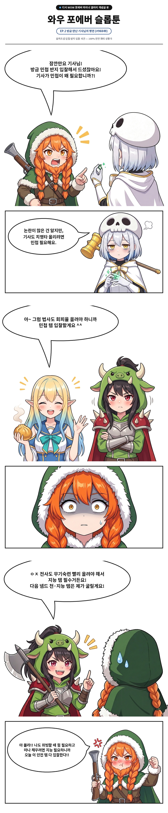
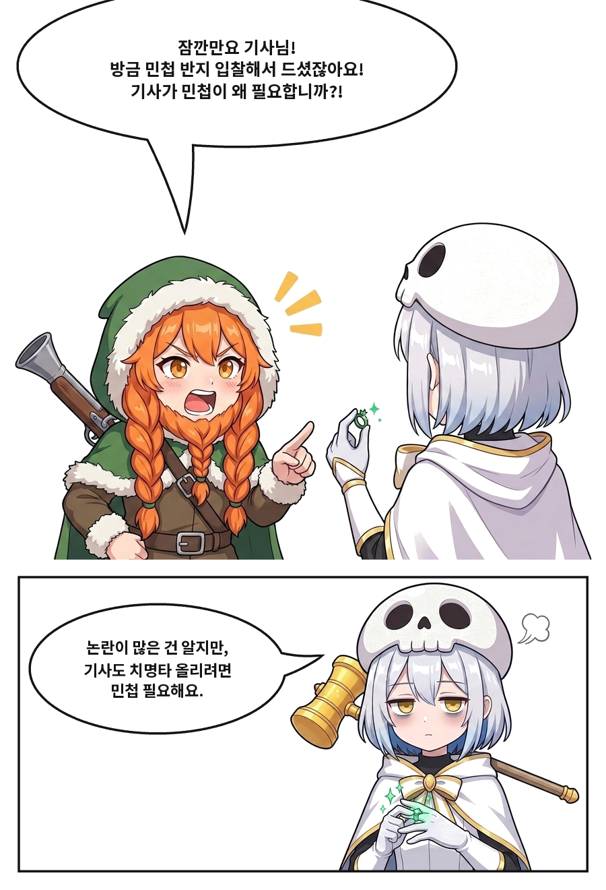
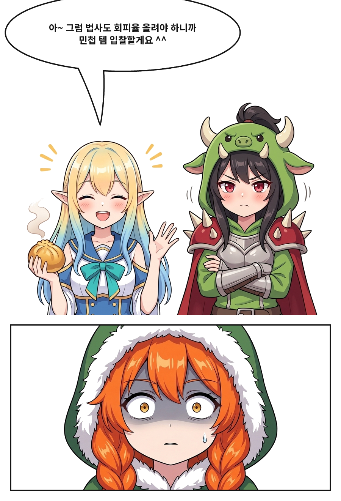
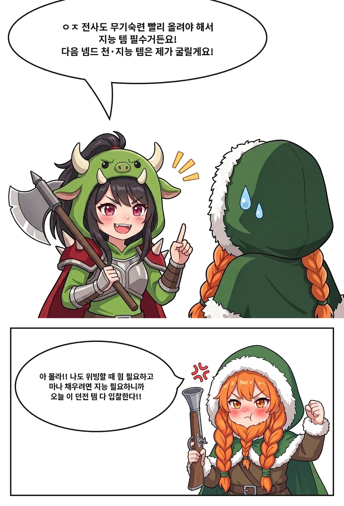

방금 만난 기사님의 명언
알카즈섬 민첩 반지 입찰 사건 — 100% 던전 파티 상황극




1-CLICK UPLOAD HELPER
디시 포에버갤 업로드 도우미
버튼 한 번으로 [만화] 제목 + 본문/출처 복사, 통합본 JPG 다운로드, 공식 포에버갤 글쓰기창 새 탭 열기를 동시에 준비합니다. (로그인·캡차 확인 및 최종 등록은 공식 페이지에서 직접 완료해 주세요.)
글 제목 (자동 복사)
[만화] 와우 포에버 슬롭툰 EP.2 — 방금 만난 기사님의 명언
본문 & 원본 출처
와우 포에버 슬롭툰 EP.2 — 방금 만난 기사님의 명언 알카즈섬 민첩 반지 입찰 사건 — 100% 던전 파티 상황극 원본 포에버갤 개념글 (#96849): https://gall.dcinside.com/mgallery/board/view/?id=wowforever&no=96849&exception_mode=recommend&page=1 웹 아카이브에서 정주행: https://slopwow.github.io/episode.html?id=ep002 ※ 시안 C 귀염뽀짝 9×9 미소녀 상황극 봇 (순수 팬메이드 패러디)